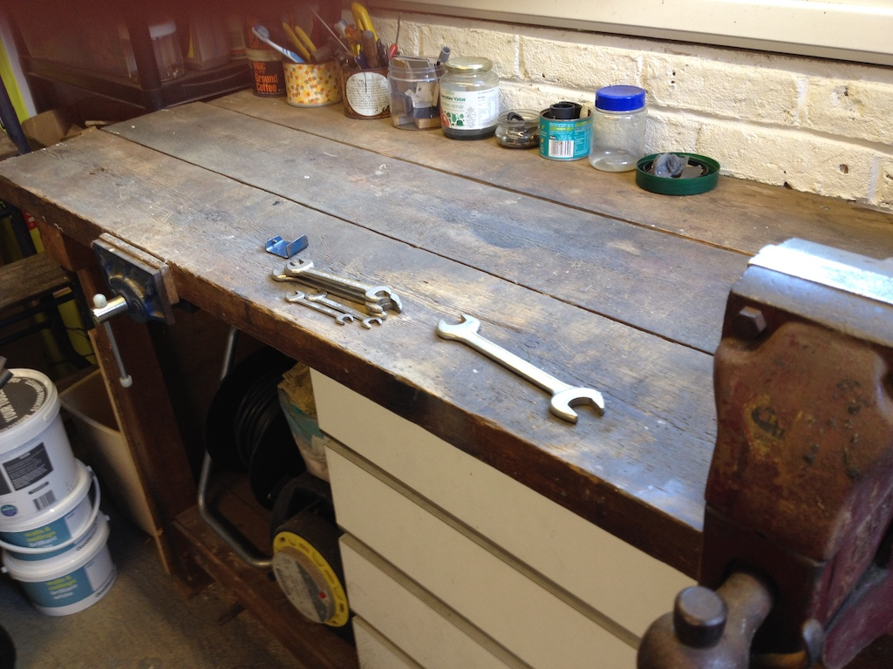
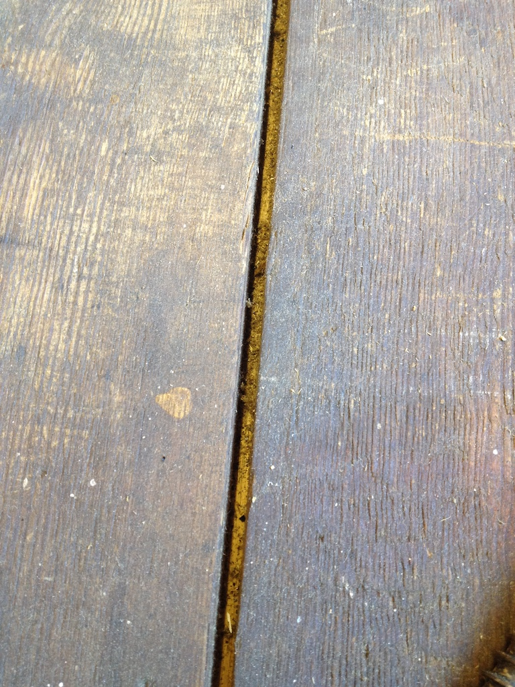

My Workbench
When Grandma and I got married we bought a new house. In fact it was still being built and when we finally moved in the are behind our house was a building site. I pulled some big planks of wood out of the mud, cleaned them and built a workbench. 48 years later it is looking a bit grubby and the wood has shrunk, leaving big gaps between the planks on the top.
You can see the gap between two of the planks in this photo and there are three planks, so two gaps. Not only did dirt get stuck in the gaps, but things like small screws would fall in and get stuck. I want to do some work on parts of my car and there will be lots of small bits that might fall into the gaps so I decided to remake the top of the workbench and try to close the gaps.
It was more difficult than I thought, since I had to remove one side of the draws (and the draws) as well as heavy vice. There are two vices on my workbench, one on the left, that is used to hold a pice of wood against the edge of the bench, and the heavy one on the right that is used to hold metal things so that you can work on them.
You will need to turn the page to read how I got on.